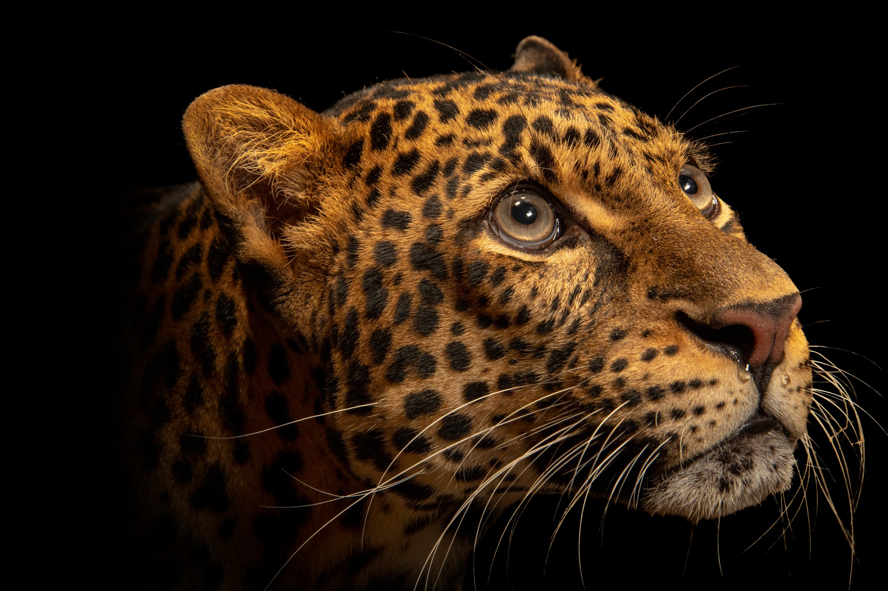

A species can be an animal, a tree, a coral, a fungus, an insect, or any number of other life forms on this planet (including humans). Altogether we call this range of life ‘biodiversity.’
How many species are out there? The honest answer is that we don’t really know. Estimates track well into the millions—with new species discovered regularly.
But we like to study the species we do know of and figure out how healthy they are. That brings us to the term ‘endangered’ and a critical tool for protecting wildlife and wild places.

Each species is different from the next, so it’s no surprise that overall health and longevity varies from one to another, too. Some, like the brown bear, are not in imminent peril, while others, like the Javan rhino, cling to survival.
The International Union for Conservation of Nature maintains a global roundup of animals, plants, and fungi and tells us whether a given species still exists and the likelihood of that species becoming extinct in the future. This Red List of Threatened Species is a cornerstone for conservation, helping us identify which species need our immediate help and what we can do to protect them.